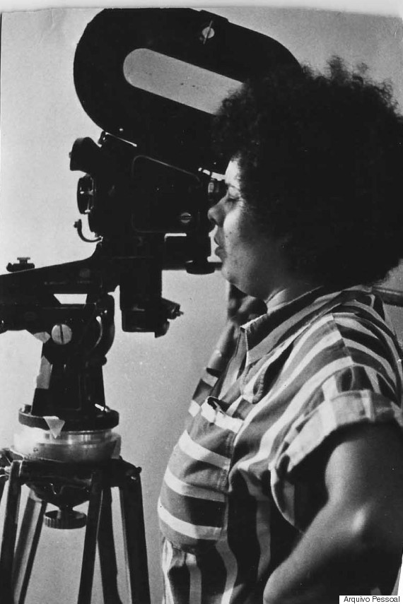

Referências
Algumas referências sobre o cinema negro protagonizado por mulheres. Ajude-nos enviando sugestões.
A CARA DO CINEMA NACIONAL
Publicação do GEMAA/UERJ sobre a diversidade no cinema, fazendo um recorte de gênero e cor dos atores, diretores e roteiristas dos filmes brasileiros.

O RACISMO APAGA, A GENTE REESCREVE
Renata Martins e Juliana Gonçalves escrevem sobre Adélia Sampaio, considerada a primeira cineasta negra a dirigir um longa-metragem.